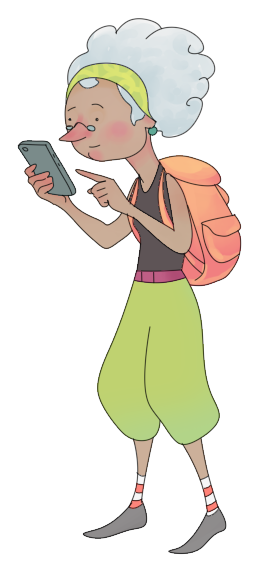

Step 1
First, click on "Create New List" on the home page. Choose a name for your list and, if you want, select a color — this is just for visual organization and helps you find your lists more easily if you have many.
Then click "Save". You can create lists for your daily tasks, grocery shopping, ingredients, or anything else you need in your day-to-day life.
Done! Your list has been created.
Step 2

Once the list is created, it will appear just below on the home page.
This is where all your lists will be displayed.
This is where you can easily view all of them.
Step 3
When you click on a list, you will be taken to it, where you can add tasks.
You can create tasks with a specific date or even a time..
If all tasks have a date or time, you can organize them using one of the options in "Show Tasks By"
Done! Now you can add, edit, and delete tasks.
Step 4
You can also rename a list, delete all tasks within a list, or even remove an entire list.
If you log out, when you log back in, your lists and tasks will still be here.
I hope these instructions are helpful! ^-^